Sèrie, paral·lel i curtcircuit¶
Els circuits elèctrics poden connectar -se de moltes maneres possibles. Les connexions més simples són la connexió en sèrie i la connexió paral·lela. S'aconsegueix combinar una connexió mixta.
La connexió a la sèrie ** ** s'utilitza quan volem que alguns components afectin el comportament d'altres components. Així, l’interruptor de llum es col·locarà en sèrie amb la bombeta de manera que pugui activar -lo o desactivar -lo.
La connexió a ** paral·lel ** s'utilitza quan volem que els components siguin independents. D’aquesta manera, col·locarem les dues bombetes d’una làmpada en paral·lel de manera que quan un dels bulbs es fongui l’altra continuarà funcionant sense problemes.
Finalment, si les connexions elèctriques estan mal fetes, es pot produir un curtcircuit ** ** o un circuit obert **. Tots dos evitaran que el circuit elèctric funcioni.
A continuació, estudiarem amb més detall tots aquests tipus de connexions.
Índex de contingut:
Circuit de sèrie¶
En un circuit de sèries, els components es connecten a la cadena, un darrere de l'altre.
{kind=link}
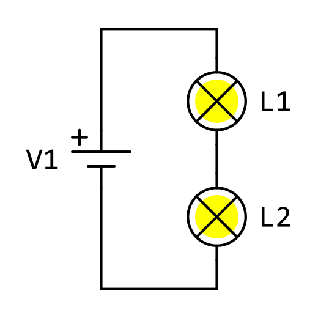
** Característiques d’un circuit de sèrie: **
El corrent elèctric que passa per tots els components és el mateix.
Això vol dir que si eliminem o obrim un component, els altres components no tindran corrents i no funcionaran.
La tensió de la pila es divideix entre els components connectats en sèries, que, per tant, tindran una tensió inferior a la bateria.
Això significa que les bombetes s’il·luminen menys quan estan en sèrie.
** Connexió d’un circuit de sèrie: **
La tensió positiva de la pila arriba a la primera bombeta.
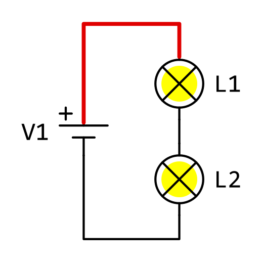
A continuació, només hi ha una connexió entre la primera bombeta i la segona.
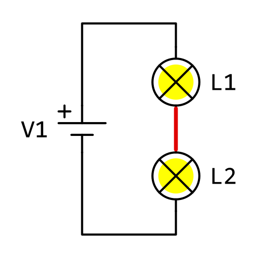
Finalment, hi ha una connexió entre la segona bombeta i la bateria.
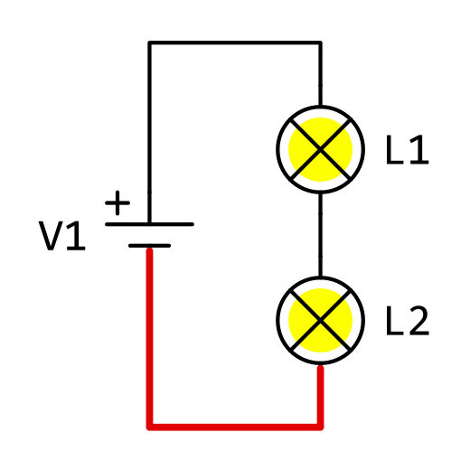
{kind=link}
{kind=link}
{kind=link}
** Falla d'un component de sèrie: **
En un circuit de sèrie, si eliminem una de les bombetes, l’altra deixa de funcionar i s’apaga.
Els sensors d’alarma i altres sistemes de seguretat estan connectats en sèrie. Si un component falla o es trenca, tot el circuit deixarà de funcionar i l’alarma donarà un avís o la màquina perillosa s’aturarà.
{kind=link}
Circuit paral·lel¶
En un circuit paral·lel, els components estan connectats entre ells a banda i banda.
{kind=link}
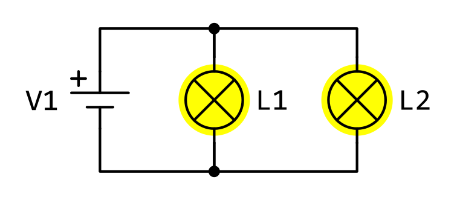
** Característiques d’un circuit paral·lel: **
La tensió elèctrica que arriba a tots els components és la mateixa.
Això significa que les bombetes tenen tota la tensió de la pila i s’il·luminen.
El corrent de la bateria es divideix entre els components connectats en paral·lel. Per tant, un corrent menor circularà per les bombetes que la bateria.
** Connexió d’un circuit paral·lel: **
Els dos terminals de bombetes estan connectats entre si.
La tensió positiva de la pila arriba a totes les bombetes per igual.
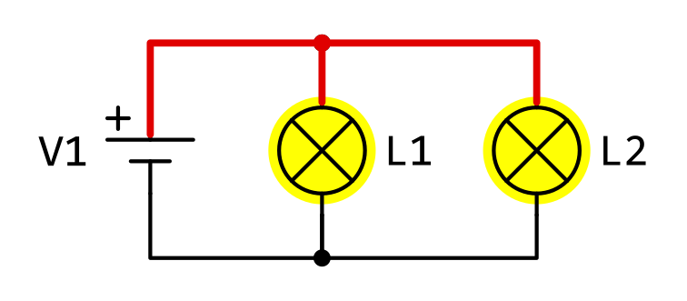
La tensió negativa de la pila arriba a totes les bombetes per igual.
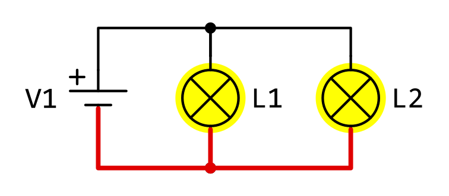
{kind=link}
{kind=link}
** Falla d'un component paral·lel: **
Si eliminem una de les bombetes d’un circuit connectat en paral·lel o si falla, els altres bombetes continuaran funcionant.
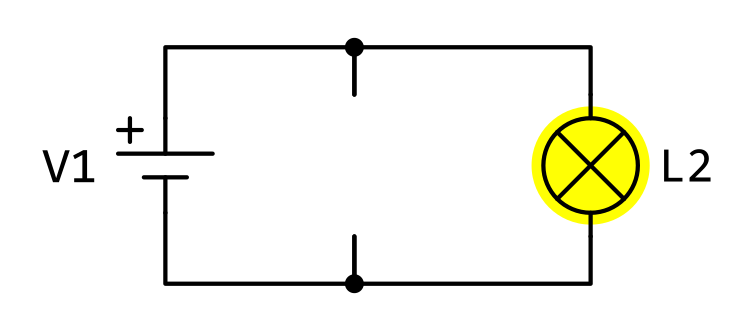
Les bombetes i altres components comuns d’una casa estan connectats en paral·lel. De Esta Forma, El Fallo de Un Componente No Impide Funcionar a Los Demás. Si eliminem una bombeta de casa, els altres bombetes continuaran funcionant.
{kind=link}
Curtcircuit¶
Un curtcircuit és la unió dels dos terminals del mateix component amb un cable. Quan un component és en breu, no pot funcionar perquè tot el corrent es desviarà pel cable. Si en breu una pila o un generador, tot el corrent que genera passarà pel cable i el generador o el cable es cremarà.
** curtcircuit en un component: **
En el següent esquema hi ha un curtcircuit a la primera bombeta. El cable portarà tot el corrent de manera que la bombeta deixi de funcionar i la bombeta per sota de L2 s’enfonsarà molt més que si fos en sèrie.
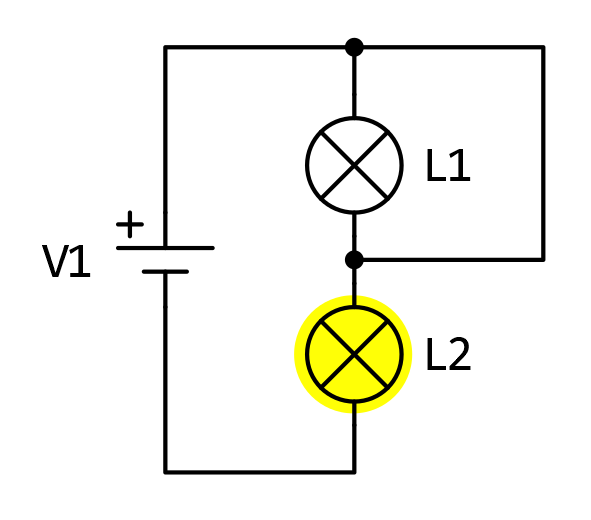
A la imatge següent podeu veure el camí de l’electricitat. Veiem com el cable és el camí preferit, de menys resistència, del corrent elèctric. Per tant, tot el corrent elèctric que anteriorment passava per la bombeta L1 passa ara pel curtcircuit.
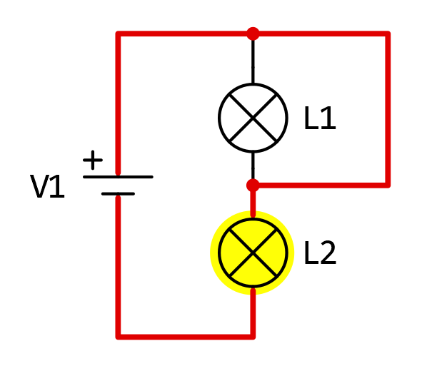
{kind=link}
{kind=link}
** curtcircuit a la pila: **
En aquest esquema hi ha un curtcircuit entre els terminals de pila. Això significa que tot el corrent de la bateria passarà pel cable i un dels dos es cremarà.
Les bombetes no s’encenen perquè no arriben al corrent elèctric.
Esquema de curtcircuit de tempestes i corrent al corrent.
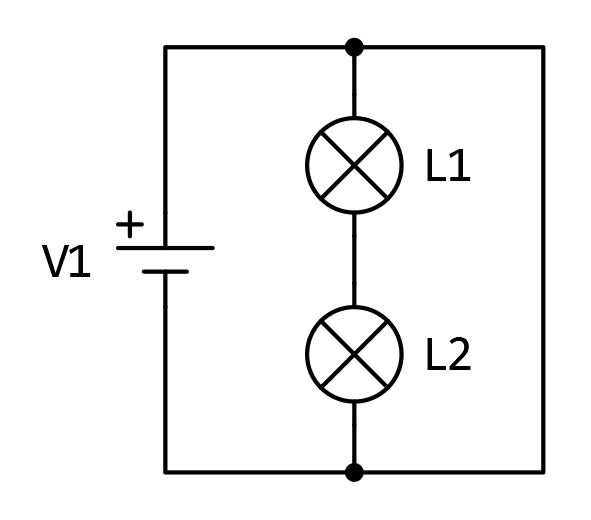
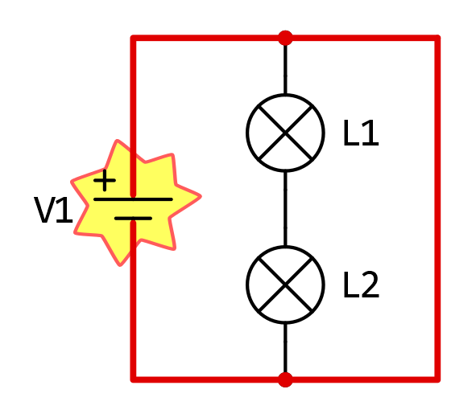
{kind=link}
{kind=link}
Nota
No repetiu aquest experiment en cap circumstància, és molt perillós.
Vídeo: La bateria de liti explota a causa d'un curtcircuit causat.
Circuit obert¶
Un circuit obert és un circuit que no té manera de circular el corrent elèctric. Es pot donar un circuit obert si falta un cable per tancar el circuit, si hi ha un interruptor obert o si algun component serial és fos.
Es pot obrir un circuit si falta la ruta per arribar a la tensió positiva de la pila o si falta la ruta per arribar a la tensió negativa de la pila.
{kind=link}
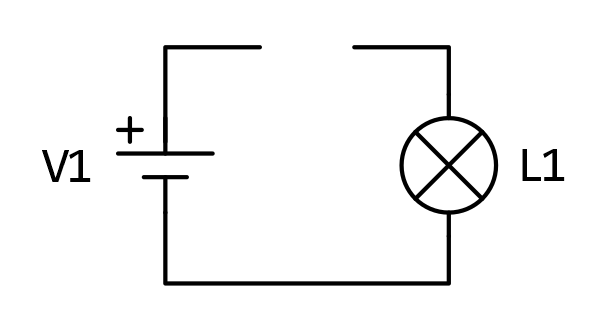
{kind=link}
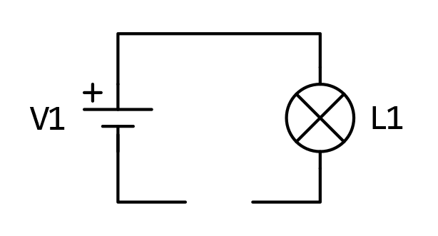
És el primer que es comprova quan un aparell elèctric no funciona, està connectat?
Exercicis¶
Exercicis per identificar circuits en sèrie, en paral·lel, amb curtcircuit en una bombeta o amb curtcircuit a la bateria.
Qüestionaris¶
Tipus de prova del qüestionari per identificar circuits en sèrie, en paral·lel, amb curtcircuit a la bateria o amb curtcircuit a la bombeta.